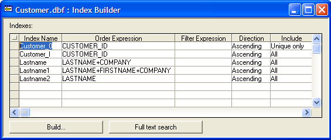

Unique and Filtered Indexes
To access the Index Builder, right-click on a table or set in the Control Panel, and select Define Indexes from the menu. In the Index Builder, you see the Index Name, Order Expression, Filter Expression, Sort Direction, and whether the index includes Unique key values only, or All key values.

Unique Indexes
Unique indexes do not include records with duplicate key values. Therefore, if you create a unique index of the Customer table, ordered by the State field, you would have only one index entry for every different state value, regardless of how many customer records have the same state value. Thus, in this index you would see all the states from which your customers come. If you created an index, ordered by the State field, that included All records, you would see all the states from which your customers come, and the number of customers from each state.
Filtered Indexes
Filtered indexes includes only records in which the filter condition evaluates to True. Therefore, if you create an index ordered by the Company field, and filter records based on the expression that the Balance field value must be greater than $1,000.00, only the company records which have balances greater than $1,000.00, will be included in the index.
Since Alpha Five updates an index whenever a field value changes, a company whose balance falls below $1,000.00 will be dropped from the index and a company whose balance exceeds $1,000.00 will be added. Thus, a filtered index functions similarly to having a constantly updated query. The caution in applying many filtered indexes is in their use of Alpha Five resources.
The following index expression orders a table in ascending order by department, and within department in descending order by salary:
|
DEPARTMENT + str(invert(SALARY), 10, 2) |
Alpha Five maintains and updates indexes, adjusting their ordered list of selected keys, whenever you add, change, or delete records. However, certain events can corrupt your indexes; for example, if you improperly exit Alpha Five, such as turning off your computer while Alpha Five is running, or if a power failure occurs while Alpha Five is updating an index.
When an index becomes corrupted, you might notice that records do not appear as expected. For example, a record that you can see in the Default Browse, viewed in record number order, does not appear on a Report.
Some database problems can be traced to corrupted or out-to-date indexes. If you have any doubt about the integrity of your indexes, you should update them manually. Selecting Update Indexes to rebuild the indexes associated with a table is likely to fix the problem. For a set, Update Indexes updates the indexes for all the tables in the set.
To update or rebuild an index, right-click on a table in the Control Panel, and select Update Indexes from the right-click menu, or select Table > Update Indexes from the menu bar.
Alternatively, you can use the Define Indexes option to rebuild the index.
Right-click on a table in the Control Panel, and select Define Indexes from the right-click menu, or select Table > Define Indexes from the menu bar.
The Index Builder appears.
Click Build. Alpha Five rebuilds the indexes.
For larger tables, a status bar displays the progress as the indexes are updated. Indexes for smaller tables are rebuilt so quickly that no status bar appears.
To delete an index.
Right-click on a table in the Control Panel, and select Define Indexes from the right-click menu, or select Table > Define Indexes from the menu bar.
The Index Builder appears.
Select the index from the Index Name column, right click, and select Delete.
See Also
Index and Query List, Query Genie, Order Card, INVERT()